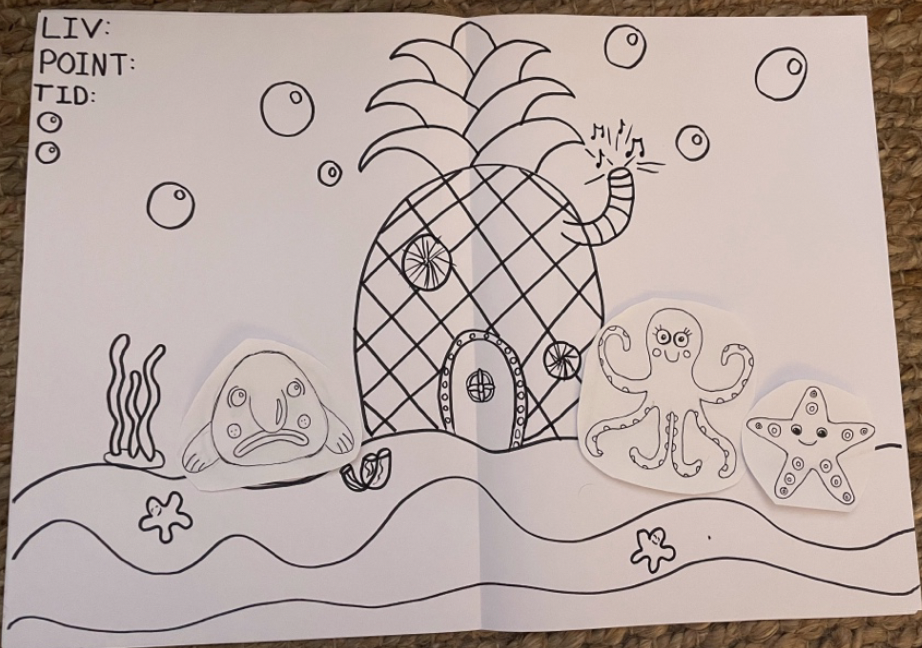
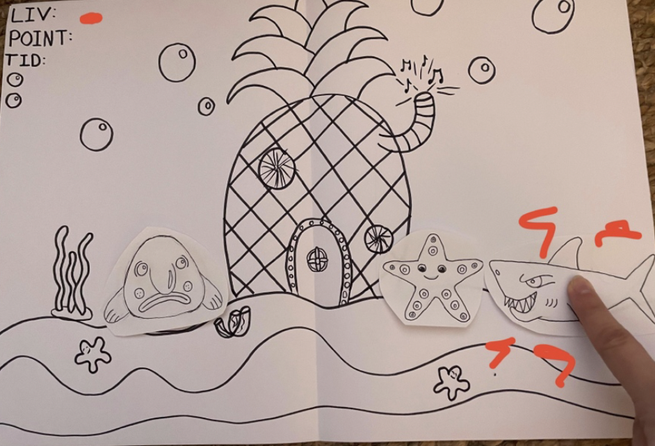
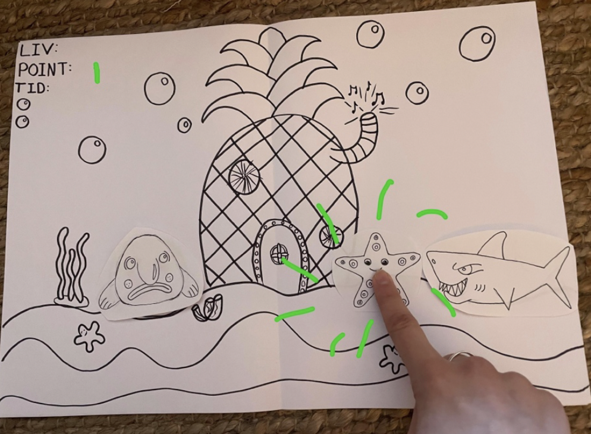

TEMA 4: ANIMATION
www.jawsout.dk I tema 4 blev vi introduceret til Javascript, der kan bruges til at kode mere avancerede og
interaktive elementer. Vi lærte om teorierne bag baggrundsdesign, UI-elementer og figurelementer. På baggrund af
vores nye viden analyserede vi vores valgte spilstil, jeg valgte flatdesign 1.
Jeg startede med at finde en ide til mit spil, herefter lavede skitser af spilskærme, spilkarakterer og Ui
elementer, efterfulgt af en papirprototype.
Vi lærte at bruge Adobe Illustrator, så vi selv kunne animere vores spilkarakterer, spilskærme og UI-elementer udfra
vores skitser.
Inden jeg begyndte at kode min spil lavede jeg aktivitetsdiagram og statemachinediagram, for at få et overblik over
hvad mit spil skulle indholde
I sidste ende drillede mit spil og virkede ikke optimalt, dog er jeg glad for mine spil elementer, animeret i
Illustrator og føler jeg har fået virkelig godt kendskab til programmet
PAPIRPROTOTYPE


